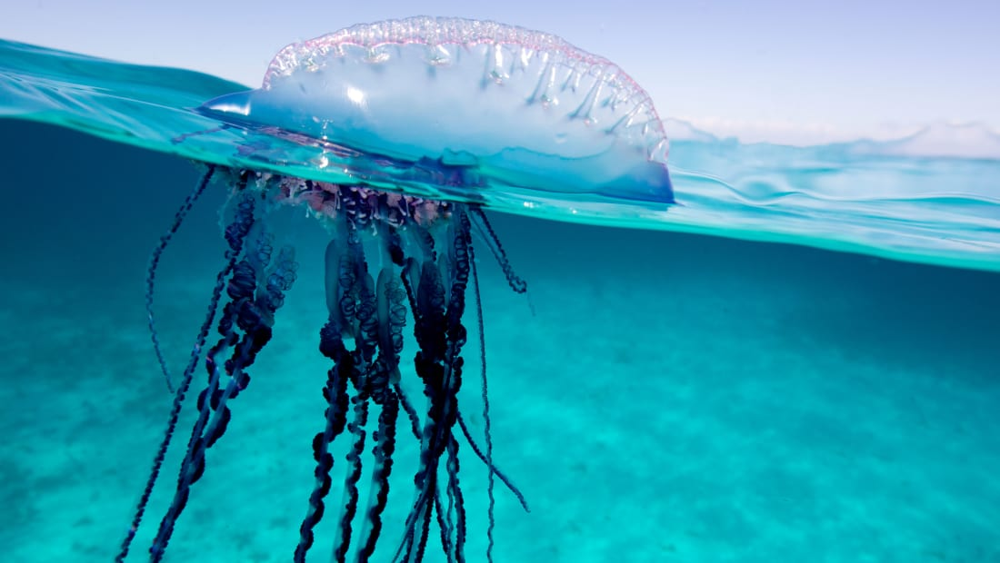

Welcome to the fantastic world of phylum Cnidaria, a vast and incredibly biodiverse assortment of creatures that are related by only cnidocytes, mesogleal tissue, and a one cell-thick layer of epithelium. In Designing this site I've endeavored to make accessing information about these incredible organisms as tedious and lame as possible!
The Phylum Cnidaria is monophyletic and consists of two separate clade: Anthozoa (corals), and Meduzosa (jellyfish).
Cnidocytes, also known as cnidoblasts or nematocytes, are microscopic explosive cells that house a single large organelle called a
click the links below if your would like to know more about the predators of jellyfish or more about Cnidocytes, the stinging cells of Phylum Cnidaria.
Click here to learn more about cnidocytes.
Click here to learn more about the predators of Cnidarian species.
Phylum Cnidaria is a remarkably diverse grouping containing jellyfish, hydra, sea anemones, and corals.
But certainly the most popular and well known creature in phylum Cnidaria is the Jellyfish or "Medusa" as they are more scientifically refered to. There are more than 2000 known species of Jelyfish in the world. Corals belong to a class within Cnidaria called "Anthozoa". There are also creatures called "Hydras" which belong to the Cnidarian class Hydrozoa; A few are of great interest to scientists as can revert revert back to infancy, and in effect live forever.
click here to learn more about subphylum Meduzosa
click here to learn more about the class Anthozoa (corals)
A Portuguese Man o' war is not actually a jellyfish but rather a siphonophore? In fact it's not even a single organism but rather an entire community of organisms living together and working together. Theses organisms are known as "Colonial organisms" and belong to the Order Siphonophorae which is an order of the Hydrozoan class. Click here to learn more about the class Hydrozoa (Hydras)
